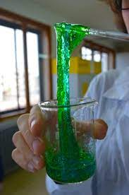

This ish is slick
Easy Halloween Slime. It is just a staple of sensory play. I know some moms hate it, but I think it is super fun. And kids just can’t get enough of it. I fully admit it can get tiring to make the same stuff over and over. So why not theme it out? Halloween is one of my favorite holidays for theme sensory activities. Time to make some Halloween slime. (But don’t think you have to limit yourself to Halloween with these! They fit with lots of themes year round.)